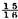

CHAPTER II.
TRICKS WITH COINS.
TRICK FOR PALM PRACTICE—HOW TO “ PASS ” A COIN INVISIBLY—HOW TO CHANGE A COIN—THE USE OF THE WAND IN PALMING—TO PASS A MARKED COIN THROUGH A TABLE —METHOD FOR CONCEALING MANY COINS—THE AERIAL VISIT AND JOURNEY—TO “ PASS ” SEVERAL COINS—HINTS ON PRACTICE—TO CAUSE A COIN TO VANISH FROM A HANDKERCHIEF—ON BORROWING A HANDKERCHIEF—THE DANCING COIN—A MYSTERY WITHIN A MYSTERY—TO CAUSE A FLORIN AND A PENNY TO CHANGE PLACES—TO PICK A MARKED COIN FROM A NUMBER, BLINDFOLDED—THE MARRIAGE—TO INVISIBLY EXTRACT A COIN FROM OUT OF A GLASS OF WATER—TO PASS PENNIES INTO A BOTTLE—TO CAUSE EXPOSED COINS TO CHANGE PLACES—TO “SLEEVE” COINS—HINTS ON MARKING COINS—THE BEST COINS TO USE.
THE uses of the palm will make themselves manifest in every trick in which money is used as a medium, but the beginner can astonish his friends, and, at the same time, make himself perfect, by any of the following minor tricks :
(a) Throw the coin backwards and forwards, from hand to hand, three or four times, in a careless manner, always taking care that the left hand is shut well over each time the coin is contained in it; and then make a feint of throwing, but, in reality, palm the coin after the method that best suits its size. The hand (in most cases it would be the left, as the majority of conjurers palm with the right; with left-handed people it would be, of course, reversed) which is supposed to receive the coin must be closed smartly, so as to make a noise similar to that caused by a coin thrown into the palm. This is effected by the ends of the two middle fingers striking the fleshy part of the thumb (Fig. 7). If this is properly executed, the illusion is perfect, and all eyes will be directed to the left hand, when the coin can be quietly placed in a side or tail pocket, to which receptacle it may afterwards be made to pass from the left hand, where it is supposed to be, in a magical manner. I would recommend the beginner to practice this movement sedulously in private, as it teaches quick and neat palming, and will prove a most useful auxiliary to many important tricks. By “ passing a coin from place to place “in a magical manner” is implied the act of pretending to do so; it being an accepted axiom amongst conjurers never to “pass” anything invisibly to any given spot until the article is already safely located there. This practice will, of course, commend itself to all as avoiding untoward mistakes. To “pass” a coin from the hand, wave the wand over it, and say whatever you think will go down best with the particular audience you have before you. A sharp rap on the knuckles will complete the operation, but always take care to show the hand empty, otherwise the trick is spoilt. If the wand is not handy, pretend to rub the coin away between the fingers, or affect to give it to one of the audience. (See Figs. 8 and 9 for an effective method.)
(The dotted line represents the coin palmed in the right hand.)
(b) Have a coin palmed in the left hand, and borrow a similar one from the audience, and have it well marked (always have coins marked where possible, “ to prevent changing ”). Make a movement as though you placed the marked coin in the left hand, but in reality palm it. At the same time, open the left hand, and the coin that has been snugly concealed there will look as if it had just left the right hand. By this means a change is effected which you can utilise according to circumstances. By fidgeting about among the audience, you may be able to place the marked coin under one of them; the other coin being held by someone who is directed to hold it “ very high, sir, very high, so that everyone can see it ”—the real object being to keep him from examining it too closely. By standing the holder of the coin on a chair, an opportunity for slipping the palmed coin into his pocket presents itself, and should be taken advantage of. The marked coin being once safely hidden, it is an easy matter to palm the unmarked one (which, of course, the audience has been led to believe is the marked one) and make it “ pass ” invisibly to wherever the other may be. The conjuror’s own coin should always be provided with a very distinct mark—a cross is invariably a safe one to employ—as it is rarely that one meets with people who can refrain from instituting an illicit investigation so soon as the conjuror’s back is turned. When the holder of the coin is seen to be surreptitiously examining it for the mark, the conjuror should not prevent him, but call the attention of the audience to the fact, and ask if the mark be visible. The holder, seeing the cross, will answer in the affirmative ; he not being aware, of course, that the borrowed coin was possibly marked with a very different sign. This incident will add to the effectiveness of the trick.
In tricks a and b the wand will be found very useful. It should always be carried under the arm, after the manner in which soldiers carry their canes; and when any palm has been effected, and the coin has to remain concealed in the hand, the wand should be taken in the hand containing the coin. Beginners, especially, will find this of great assistance, as in the case of a somewhat defective palm the coin can be pressed well home by clenching the wand hard. Besides this, the fact of carrying a wand in the hand keeps the idea of the coin being there from the minds of the audience; and the mind is what the conjuror has to deceive.
(c) Have a coin palmed in the right hand (Palm No. 2), and procure a similar one, marked, which hold up to the audience by the left hand. Pretend to take it in the right, but let it fall into the hollow of the left hand (Figs. 8 and 9); the unmarked coin in the right hand being exhibited. In order to effect this daring change naturally and without detection, the thumb of the right hand must be passed through the ring formed by the thumb and forefinger of the left and the coin held between them, and the fingers closed well over the coin, which will appear to be grasped by them. Now place the left hand under the table, the right hand remaining above. Covered by the action of bringing it on the table, execute Palm No. 1 with the right hand, but keep the fingers formed as though they still held the coin, which you then pretend to lay on the table with a sharp “ click.” This “ click ” is made by the coin in the left hand, under the table, in order that the illusion may be perfect. The right hand will then affect to rub the coin through the table, and eventually the one in the left hand, which has in reality never been out of it, will be produced. The noise of rubbing is also made by the coin under the table, only it must not be continued too long ; and care must be taken that the two hands act in perfect unison, as it will not do for the noise to continue when the action of rubbing with the right hand has ceased. This trick is not so difficult as it looks on paper, and is very effective. The whole trick consists in pretending to take the marked coin from the fingers of the left hand without doing so.
(d) Conceal a number of coins in the left hand. As a quantity cannot be easily palmed, they must be held in the hand with the wand. If that is not handy, hold the flap of the coat; but care should be taken that the wand is at hand for this trick. Borrow a hat, taking it in the right hand (in which a solitary coin is palmed), and transfer it rapidly to the left in such a manner that the crown is always towards the audience, and the fingers holding the coins are inside. The coins must not be jingled, or the trick will be exposed. Tell one of the audience that he must be very rich if he can afford to carry money about in such strange places as you perceive he does. Surprise will, of course, be expressed on his part, when you will fumble about in his hair, and eventually find the coin which you have had palmed. This is a much better method of commencing than merely saying, “I have here a shilling.”It is sure to amuse the audience, and put you on a good footing with them; besides which, it is always well to mingle as much with them as possible, as then people go home and say, “ Oh ! he came right down among us, and found money in people’s heads,” &c. Also take care to find the money in an elegant and inoffensive manner. Having spun the coin in the air, in order to show that it is a real one, retire to the end of the room, as far away as you can, if the room is small, and hold the hat, still in the left hand, before you, with the crown towards the audience. With the coin in the right hand, make a pass at the hat, palming the coin (Palm No. 2), and letting one from the left hand fall. You will then appear to have passed the coin from the right hand into the hat, by way of the crown. Should the coin by accident fall on a soft place in the hat, and make no noise in so doing, shake the hat about to show that the coin really is inside, or no one will know what is supposed to have taken place. Now advance a step or two, looking cautiously forward as if you saw something in the air, and suddenly make a dart out with the right hand, at the same time bringing the coin to the extreme ends of the fingers. The idea conveyed is that the coin has been caught in the air (Fig. 10). Pass it through the hat, letting another fall from the left hand, and shaking the hat so as to ensure the two that have been dropped jingling together, and find another in the air a little farther on. Proceed in this way till all the coins in the left hand are exhausted (varying the proceedings by occasionally finding one at your elbow or foot), and then show the hat with coins to the audience, a member of which will doubtless have “ just one more” seated on the tip of the nose, which coin is put into the hat in the ordinary way. The beginner should use shillings, seven or eight only in number, for this trick, although larger coins are certainly more effective at a distance. It is best to use two palms, viz., the finger palm when the coin is to be caught in the air or in the flame of a candle (a very pretty effect), as it is more readily brought to the ends of the fingers from that position ; and either of the others (No. 1 for choice), when the coin is to be found on the body or elsewhere. It is as well to occasionally pretend to put the coin into the hat in the ordinary way, instead of through the crown. Some conjurors object altogether to passing through the crown; but this is merely a matter of fancy. It sometimes happens that the person in whose hair you find the first piece will, from his being a “funny man,” or otherwise privileged person, ask you to give him back his property. Acquiesce at once with his request, of course after your own manner, which will be to palm the coin, and pretend to give it to him, much to his discomfiture. In borrowing the hat, be sure that it hides the left hand in the act of being taken, so that any accidental exposure of the coins held there, which might occur through inexperience, will be covered. Also observe the greatest caution in dropping only one coin into the hat at the first pass. After the first coin has fallen, it does not matter if two or more are accidentally let fall at once, as the error could not be detected; but at the commencement it would be simply fatal to do so. Under cover of the hat it is easy to separate one coin from the rest for the first drop. If the number of coins is very limited, you must give the hat a short, sharp shake, which will serve in lieu of letting one fall; but only do this now and then. This trick will be treated in an enlarged form, under the head of “ Grand Magic.” When any number of coins are required for any other trick, they should always be collected in this manner, it being a most effective method. Always take a step in advance each time a coin is found. For this reason the performer should stand well to the right on the stage on commencing.
(e) The following makes an excellent “follow” to the preceding trick: Suppose that you have sixteen coins in all in the hat; conceal four of them in one hand. If the hat is then held by the same hand, it will not be noticed that it contains any coins. Now ask someone to count the coins in the hat, and, of course, there will be twelve. Take four of these away, and give them to be held by another person. Hold the hat high in the air, and tell the person who has the remaining eight coins to drop them into it when you have counted “ three.” Watch the action of his hand narrowly, and, as the eight coins fall, release the four concealed in the hand which holds the hat so that they all fall exactly together. The great thing to avoid is the sound of two distinct drops, which would be fatal. Leaving the hat, covered with a handkerchief if you please, in the hands of your temporary assistant, who will, of course, be enjoined to “hold it very high,” you take the four coins just previously given to be held, and “ pass ” them invisibly into the hat, where, of course, twelve coins will be found. The method for passing used is the same as that depicted at Fig. 7, with the difference that the coins are not palmed. They must be held in the fingers loosely (Fig. 11) so that when the false movement of placing them in the out-stretched palm is made they will come together with a clash, which is highly necessary for the success of the pass. The hand actually containing the coins must instantly seize the wand, which article will then cause the magic journey from left hand to hat to be made. Be careful that the counting of the coins is done in a very deliberate manner, and in a loud voice, so that everyone in the room knows how many coins are supposed to be in the hat before you pass the rest into it. If this is not done, the effect of the trick is lost.
Here let me advise my readers to assiduously practise quick palming, for which purpose I would recommend trick a as a most effective exercise. So much depends upon a quick and secure palm, that too great a stress cannot be laid upon it. Indeed, I cannot too strongly impress the learner with the necessity of practising everything, to the minutest detail, in private, before venturing to perform before others. By so doing, much chagrin and disappointment will be averted.
(f) The trick I am now about to describe will, I have no doubt, be known to many of my readers; but I ask no excuse for giving it here, as those who can claim a previous acquaintanceship with the trick will, perhaps, here learn a wrinkle or two worth knowing : Borrow a handkerchief. When I say “ borrow a handkerchief,” I do not mean simply borrow one without any comment. On the contrary, make a great fuss about never using your own handkerchief, &c. ; and be particular to hand round all borrowed articles for inspection, to show that you “ have no confederates.” By making your audience thoroughly sick of looking at borrowed articles, they are more likely to pass over anything of your own that will not bear minute examination. This should be borne well in mind. Spread the handkerchief out upon the table, and place a coin, not heavier or larger than a shilling (borrowed and marked), in the centre of it. Beneath the nail of the middle finger of the right hand (which hand is immaterial, but for the purpose of illustration it is necessary to use the terms “ right ” and “ left ”) you have a small piece of bees’ wax (on no account cobblers’ wax) which you have previously made tolerably adhesive by working it about. Place this finger on the coin, saying, “ Now, in order that all may see that I do not for one instant move the coin from its position, I place this finger upon it,” and, taking up one of the corners of the handkerchief in the other hand, fold it over the coin so as to well cover it, and press it down hard, allowing the wax to come off on the coin, and to cause a mutual adherence between it and the handkerchief. Fold the remaining three corners over one another with great deliberation, exhibiting a portion of the coin each time, to show that there is “ no cheating.” When all four corners are folded over, the handkerchief will still be in the shape of a square, but of course much smaller than it was at the commencement, and it will have an aperture running from the centre to each corner. Note the portion of the handkerchief to which the coin is stuck, and place the two hands, side by side, in the aperture formed by this portion and the one next to it (Fig. 12). If the hands are now separated briskly, and the sides of the handkerchief allowed to slide through the fingers, it stands to reason that, the coin being fast to the corner of the handkerchief, it will, when the corner is reached, find its way into the hand. The handkerchief must be shaken hard, as soon as the coin is safe in the hand, for effect. The operations of opening the handkerchief and shaking it must be practised until they can be compassed both smoothly and quickly in one movement. The trick is easy, but requires some little practice. Common soap is an excellent substitute for wax, but it has the disadvantage of being less portable. The beauty of the wax is that it can be so easily concealed beneath the nail, and comes off the coin cleanly. The coin successfully vanished from the handkerchief, it rests with the performer to reproduce it in what manner he pleases. If he has already found coins in the heads of the audience, the reproduction can be varied. For instance, if a tiny piece of wax be affixed to the flat end of the wand, and that end brought into contact with the coin whilst in the palm, and a little pressure used, the coin will adhere. Then, if the wand be passed rapidly behind a curtain, or inside the coat of one of the audience, a great effect can be caused by slowly producing the vanished article from its supposed place of concealment at the end of the wand. The trick can be further prolonged by having about 15in. of human hair, with a tiny bead of wax at the end, affixed to a waistcoat button. Affix the coin to the waxed end, and place it in a wineglass, in which it can be easily made to dance by slightly moving the glass or depressing the hair with the wand, which is supposed to be beating time. Such a combination of tricks, each one easy in itself, affords invaluable practice to the beginner. The conjuror, like the chess-player, must always see, in his mind’s eye, two or three moves ahead, so that no hitch or hesitation occurs. For example, the instant the coin reaches the hand from the handkerchief, it must be palmed, the wand taken up, and the handkerchief ostentatiously given round for inspection to show that there is no hole in it, or for any other plausible reason. Perhaps you will only gain five seconds by this, but that is time enough to enable you to press the wand against the coin. You must not, after this, allow the least pause to occur, but at once seize someone, and have your wand inside his coat before he knows what you are about; for it must be remembered that, if the action is noticed, the coin will be noticed too, as it is in a tolerably conspicuous position at the end of the wand. Then, whilst you are rating the individual soundly for having endeavoured to spoil your trick by concealing the coin, and drawing universal attention to him, one hand will be busily employed in pressing the waxed end of the hair against the coin. The trick of dancing a coin in a glass is so well known that no one with any desire for a reputation as a prestidigitateur would introduce it by itself ; but, in the illustration I have just given, the coin has been in such a variety of places and situations, that the idea of its being fixed to anything does not enter the minds of the audience. Half-a-minute’s dancing is quite sufficient, and at the end of it the attention of the audience must be at once drawn into another groove by your showing the coin to be the veritable one marked some time since, the wax being removed by a finger nail.
(g) Another very pretty trick is the following, although also well known. Procure (a “magical repository” will be found the best place to go to in the long run) a “nest” of round boxes, one fitting inside the other. If the outside one is of the size of a crown piece, and the inner one large enough to contain a shilling, the “nest” should consist of nine or ten boxes. Have the lids arranged in order, one within the other, and the bodies in the same manner, beside the lids. If you are performing with a retiring screen, the boxes can be arranged behind it. Lacking this, the next best plan is to have them at the bottom of a bag, which will stifle the noise made by shutting them. Borrow a marked coin, which you will exchange for a similar one in your palm (Palm No. 1). Give this to be held. Say, “ Now, here I have a small box.” But as you have purposely left the “small box” behind your screen or in your bag, as the case may be, you will have to go and fetch it. As soon as your hands are out of sight, pop the coin (which will be the marked one) into the smallest box, and shut all the lids down together. If you have to do this inside the bag, and consequently in full view of the audience, your face must bear an anxious and slightly annoyed expression, as if the box could not be found. As soon as the manœuvre is executed, exclaim, as if much relieved, “Ah, here it is. Now, ladies and gentlemen,” &c., &c. The operation of shutting all the boxes down at once is a very simple one if the lids are taken in one hand and the bodies in the other, the two halves meeting, as it were, half way. A little practice will soon show the futility of attempting to turn the lids over on the bodies. Place the box in a prominent place (do not give it to be held, as a slight shake will reveal the fact that there is a coin already inside), and, taking the coin out of the handkerchief, “pass” it into the box, which now ask someone to open. Of course, box No. 2 will be found inside, at which you will say, “ Dear me !” or make any other expression of surprise. Boxes Nos. 3, 4, and so on will in turn be revealed, amidst great amusement, and in the innermost one, which the performer must, on no account, open himself, the coin will be discovered. You cannot very well avoid allowing an examination of the boxes, but always take care that the lids are in one place and the boxes in another, and all in great confusion as to gradation of size, and at the earliest opportunity sweep them away. It is the fashion to perform this trick with a coin previously sewn in a handkerchief, which handkerchief is whisked in the air. The effect is decidedly good, if not spoilt (as it certainly will be, ever and anon) by a demand to examine the handkerchief, which demand, I need hardly say, it is impossible to accede to. This sort of thing the conjuror must never indulge in. Let him borrow and return his handkerchief like a man, and trust to his sleight of hand.
(h) Palm a penny (Palm No. 1); borrow another, and a florin. Ask one of the audience to extend his or her hands (palms open and upwards) towards you; give the borrowed penny to be held by someone else, hold the florin at the ends of the fingers of the left hand, and execute the pass described in trick c, which will leave the florin in the palm of the left hand. The penny in the right hand must not, however, be actually exhibited, as is the coin in trick c, but be immediately placed in one of the outstretched hands before you. If the owner of them is at all restive, and anxious to see what is in his or her hand, or is a person you know or think you cannot trust, ask the nearest person to assist in the operation by holding the hand in one of his or her own. This, you will explain, is to show that you have no confederates. If the two parties are of opposite sexes, you can improve the occasion by some gentle sally about the gentleman being honoured by holding a lady’s hand, &c. This operation concluded, the audience, including the holder of the coin, is, you may have no fear, under the impression that the florin is in the holder’s hand. You have now to make believe to place the penny into the other outstretched hand. To do this, you must execute the same pass as before, only reversed; i.e., the right hand will hold the penny, and the left the palmed florin. This trick affords an instance where palming with both hands is a requisite accomplishment. If the performer is not able to palm with both hands, an opportunity must be made for getting the coin in the left hand back into the right. By repeating the change as before, you will be supposed to place the penny in the other hand of the holder, and, drawing particular attention to the exact position of the coins, command them to change places. This trick, so simple to look at, is one of the most difficult to perform of those yet described; for not only must the sleight of hand be well executed, but the whole demeanour of the performer must be impressive of the fact that he really is doing what he says he is, instead of exactly the reverse. Yet the impressiveness must not be too pointed, or the natural suspicion in human nature will be aroused The “happy medium” is well hit if the performer, in giving the florin (in reality the penny), says, “ Now, sir ” (or “ madam,” as the case may be), “I will ask you to take great care of this coin for me. Conjurors are but poor people, and cannot well afford to lose money; for this reason I have given, you the florin to hold in your right hand, it being the stronger.” On giving the penny, you can say that “I would rather, for safety’s sake, that it were along with the florin in the right hand, only, in that case, there would be no trick.” In giving the coins into the holder’s hands, it is highly essential that you close the latter rapidly, the coins being so covered by your own fingers during the operation that nothing is seen of them. Otherwise, it would be unnecessary to proceed further with the trick. The florin may be marked, but not so the penny, unless the audience insists upon it, as they sometimes will, at the instigation of Mr. Interference; in which case the pennies must be once more exchanged—a very simple matter—before the coins are returned to their owners.
(i) Borrow or produce (it is immaterial, save for appearance, which you do) six to nine coins, and lay them, apart from each other, on a table or slab. Have one of the coins marked by several persons in the room (use the “no confederate ” excuse), and placed along with the unmarked ones in a hat and the whole shaken up so as to be well mixed. Whilst this is being done, have yourself blindfolded. Placing your hand in the hat, feel every coin, and you will at once detect which is the marked one, by its warmth. The heat is imparted to it from the many hands through which it has passed. It is always advantageous to have the other coins lying on as cold a place as possible; but never turn back a tablecloth for the purpose of allowing them to lie on the bare mahogany, or a clue to the solution of the mystery will be given. Sometimes some clever people will pretend to put the marked shilling into the hat without doing so. This you can easily detect by counting the coins. Of course, you would not count them until you failed to find the marked one, as the trick should be performed as quickly as possible. No sleight of hand whatever is required; but it is a trick which never fails to excite the greatest wonderment whenever successfully performed. By allowing the audience to arrange the preliminaries, you disarm suspicion. The blindfolding, which is an innovation of my own, I find a great improvement. Of course, make the most of it.
(k) Have a shilling palmed (Palm No. 1), and borrow another ; also a handkerchief. Place the borrowed shilling in the handkerchief, which roll up very loosely, the coin from the palm being included in the folds, and as near the other one as possible without actually touching it. Place the whole in a hat, with one end of the handkerchief hanging out. Now borrow another shilling, which say you will pass invisibly into the handkerchief. Make a pass, and ask someone to shake the handkerchief into the hat, when the two coins will jingle together. This is a simple trick, and is capable of variation according to circumstances.
(l) The trick I am now going to describe, as a drawing-room experiment with coins, surpasses, for simplicity and effect, all others. But its simplicity must not lead the learner to attempt it without having attained some proficiency in the foregoing tricks, for considerable neatness is required to execute it effectively. Procure a piece of glass of the size and thickness of a penny, and have the edges ground smooth, but not polished. This is best obtained from a lapidary—not an optician. Have it palmed in either hand (Palm No. 1). Borrow a penny, and, whilst it is being marked, ask one of the audience to half fill a wineglass, which has been well examined, with water. Always let the audience attend to such matters as these, as it tends to disarm suspicion, and also saves you trouble. You will, of course, not omit to make the most of there being no possible deception in the glass, which you will give a lady to hold by the stem or foot. Now borrow a white handkerchief, as coarse as you can procure it (do not ask for a coarse handkerchief, for that would be impolite, but say you want a gentleman’s handkerchief, and then you can select which you prefer), and, taking the marked coin in the same hand as that in which the glass is palmed, spread the handkerchief over it. Approach the lady holding the wineglass, and affect to take up the coin, with the handkerchief, from the outside, by means of the disengaged hand, but in reality take up the glass, palming the coin (Palm No. 1). Now spread the handkerchief over the wineglass, with the supposed coin exactly above the latter, and within an inch of its rim. Let the holder of the wineglass grasp the coin (i.e., the counterfeit presentment thereof) with the thumb and forefinger of the disengaged hand, and keep it in the same position, with the understanding that at the word “three” it is to be allowed to fall into the glass (see Fig. 13). Take great care that the piece of glass is held exactly over the wineglass, and utter the word of command only when there is a dead silence. The jingling of the falling glass will, of course, be assumed by the audience to be that of the penny. You will now express your intention of invisibly extracting the coin from the glass. Use any cabalistic form you may choose, and, with a flourish of the wand from the wineglass towards your hand, exhibit the coin, and give it to be examined. Let the lady withdraw the handkerchief from the wineglass, which at once seize and show rapidly round. The glass at the bottom will not be perceived, and you must take an early opportunity of extracting it. Some tricks “take” in various degrees at different times, but this one never fails to throw the audience into a state of bewilderment. Alway obtain possession of the wineglass as soon as you can after the completion of the trick, for people will sometimes feel to the bottom of it with their fingers, although without the faintest notion of what they are looking for. When you bewilder people, you must not be surprised if they do inexplicable things, and must prepare yourself for all emergencies.
My reason for directing the performer to borrow a penny for this trick is that it has, similarly with the circle of glass, no milled edge, and is of the size most convenient for the occasion. In extreme cases an eyeglass may be used, when, if it has a milled edge, as most of them have, it would be as well to borrow a florin ; but in such instances there must be no dallying in showing the glass round after the trick, or the ribbed edge will infallibly be seen. I remember finding myself, on one occasion, without my piece of glass, and borrowed an eyeglass of one of the audience, under the pretext that the silken cord by which it was suspended was the very thing I required for a trick. I did some trivial thing with the cord, but forgot to return the glass for an hour or so, having in the interim forced it out of its frame (it was mounted in tortoiseshell), performed the trick, and replaced it. I knew that I should have to perform this particular trick, or have my reputation tarnished, so made a bold stroke for victory. Now I am never without the glass, and advise my readers to observe the same precaution. A port wine glass is the best to use, the piece of glass being liable to stick in the comparatively narrow sherry glass. Always give the wineglass to a lady to hold: ladies are less liable to attempt to conduct experiments after their own manner, or to make premature disclosures, either of which proceedings is embarrassing to the performer. The conjuring repositories supply a champagne tumbler, with a glass exactly the size of the interior of the bottom. This is an undoubted improvement, as the water may be poured out, if an examination be demanded, when the glass will still adhere to bottom of the tumbler, although the latter be turned upside down. This trick, when “worked” in conjunction with the nest of boxes, previously mentioned, makes an excellent combination. The nest can be used for any sized coin by the simple expedient of removing the very smallest boxes.
(m) Take a penny, in good condition, and make, or have made, by a competent person, a groove, quite in. deep, all round the outer edge. This is very easily and most efficiently managed by means of a lathe; but, wanting that useful machine, a piercing-saw and flat needle-file will answer. When the groove is completed, with the piercing saw cut the penny into three pieces of equal width. Now take a very fine indiarubber band, obtainable at all shops where rubber goods are sold, and stretch it round the groove. The illustration shows the penny in three pieces, and also the band—actual size before being stretched. In putting on the band, commence with the centre piece, and then fit in the side pieces, the greatest care being necessary not to allow the band to get twisted. The result of these operations, when concluded, is that the penny can be folded up and made to occupy a space in width one-third of its usual diameter. When held at a little distance from the spectator, the incisions are not observable, especially before the penny is used for a trick, the issue of which, being unknown, does not lead the suspicions of the audience into any particular groove. As the act of folding causes a sharp strain to be put upon the band at the junctions, the groove at those points must be carefully filed, so as to completely do away with anything resembling a cutting edge, or a disaster may very easily occur. Invariably, before using, the band should be minutely examined, and, if the slightest signs of wear manifest themselves, it should be changed.
FIG. 14.
The prepared coin (which need not necessarily be a penny) is generally used in conjunction with a bottle, into which it is made to pass, viâ the mouth. In order to make the trick at all satisfactory, a marked penny should be borrowed, and exchanged, by any of the previously described methods, for the prepared one.
A soda-water bottle has been previously handed round for examination, and this is taken in the left hand. With the right hand show that the penny is at least as broad again as the mouth of the bottle, and then, folding it up quickly whilst making a covering movement, and hidden by the body of the hand, let it fall through. Show the bottle round to the spectators, continually shaking it, as if to convince them that the coin is solid and real, but really to prevent the possibility of the slits being seen. The trick can now be finished in two ways, viz., the bottle may be broken, or the coin can be shaken out again. I fancy the breaking of the bottle is the more effective, as the shaking out method impresses too forcibly upon the mind of an intelligent company the fact that some mysterious, if ingeniously concealed, preparation exists in connection with the coin. But the performer in this instance, as in very many other cases, must be guided in his actions by the mental calibre of the spectators. To shake the coin from the bottle, the latter should be taken horizontally in the right hand, the fingers of the left hand closing round the mouth, leaving a hollow in the palm for the coin to fall into. A not too violent sweeping shake is then given, bringing the mouth of the bottle downwards, when the coin should pass into the left hand. Some little practice will be required to insure this operation being brought off at the first attempt. Having to shake the bottle three or four times looks unskilful, although it does not absolutely spoil the trick. I have directed the use of a soda-water bottle because it has sloping sides, which facilitate the operation of getting the penny out very considerably, and also because it is made of white glass. If a coloured bottle were used (which it must not be, if possibly avoidable), the spectators would suspect that a coin had somehow been concealed in the interior before the trick began. However the coin may be regained, whether by breaking the bottle or by shaking out, it must be immediately re-exchanged for the borrowed penny, which will then be returned. It is quite possible to have that coin palmed during the whole operation; but if the performer lacks the necessary skill for this, it should be carried in the ticket pocket of the coat. The conjuror should have every coat he wears (excepting his dress one) furnished with this ticket pocket, and it will be greatly to his advantage to have one on each side. It should not be too deep, so that coins and other articles may be speedily reached with certainty, and it should not have a covering flap.
The penny can also be prepared by omitting the groove, employing instead holes, made completely through, across the slits, through which elastic is passed, and fastened. As, for this purpose, flat elastic is immeasurably superior to any other form, some trouble is entailed in making suitable slits through; but, once accomplished, the article is far better than one prepared in any other way. The elastic should run quite freely through the centre piece, and be fastened with glue to the outside pieces only, first being slightly stretched, to insure the whole being brought closely together. The grooved penny can be purchased at a much less cost than would be incurred in making it, and, in addition, is more likely to be correctly constructed.
The following is a development of the use of the folding penny, which is even more startling than the foregoing, one or more pennies being made to pass into a bottle, which has been examined, and which has the mouth stopped by a large cork. In this case, the cork (Fig. 15) is a delusion and a snare. It is just 2in. long, and in. broad at the top, tapering to  in. at the bottom. Viewed from the exterior, it is a cork; in reality, it is made of brass, with a thin veneer of cork glued on the outside. The measurements given include the cork skin. The bottom opens, flap-like, on a hinge, but is kept normally closed by means of a fine spiral spring, running the whole length of the inside, and soldered on the top and bottom. Protruding through a hole drilled in the top is a pin, which also runs the whole length of the interior (carried inside a small tube), and, when pressed, pushes open the bottom flap, thus allowing any contents there may be to fall out into the bottle. When the pressure upon the pin is removed, the power of the spring closes it again. This cork is charged with one or more folding pennies (three or four are generally used), and concealed in the hand, a genuine cork being handed for examination. The latter is changed for the “ property” cork, which is then placed in the bottle, which must be white, and, of course, have a very wide mouth. The performer now produces some pennies, which he may “pass” into the bottle in any way he pleases. A good method is to use the two boxes described in “Grand Magic as then the performer’s hands are free. But the pass shown at Fig. 11 may be employed, the bottle being taken in the hand in which the coins are actually concealed. When the coins are being “passed,” the bottle must, of course, be held in one hand or the other, and pressure given the pin by a finger at the proper moment. Where one coin only is used, it may be simply palmed, which method would also apply where the performer is skilful enough to palm several coins at once. In this case, the coins would merely be held in one hand, and the bottle in the other, and the coins thrown into the bottle.
(n) A very pretty trick, though rather difficult to learn, is performed, with the aid of the Reverse Palm (Fig. 6), as follows: Borrow from two separate persons two coins of the same denomination. Take particular pains to have the marks quite distinct on each, so that the two are distinguishable from one another. There is no objection to the performer superintending the marking, in order to insure its being properly done. One coin, for instance, might have a single stroke marked upon it, or a cross, whilst the other could have a small circle or an initial. The numbers 1 and 2 could also be efficiently employed; and, for facility of description, I will now suppose them used. Palmed (Fig. 2), you have another coin of your own, similar to those borrowed. You place two chairs or settees a little distance apart, between yourself and the spectators. Take coin No. 1, and, standing behind one of the chairs, facing the company, act as though you tossed it upon the cushion. What you really do, however, is to palm the coin by the reverse palm, following the instructions on page 8, for throwing a coin away into the air; the coin that has been concealed in the palm being released, in its stead. This action must be assiduously practised until it can be performed with complete certainty and smoothness. Practise first tossing a coin on a chair from a distance of a couple of feet, and then imitate that action as nearly as possible whilst making the change. The toss must be made with a steady, smooth swing, neither too hurriedly nor too slowly executed. When the manœuvre is finished, the palm of the hand must, of course, be towards the audience. A half, or whole, turn of the body must now be made, to enable the performer to get the coin from the back of the fingers to the palm proper. The way to ensure the safe execution of this is to put the thumb over the first finger, so that it grasps the coin, assisted by the middle finger. The first finger can then be drawn out of the way. With coin No. 1 in the palm, take coin No. 2, and repeat the changing operation, at the completion of which the state of affairs will be: On chair 1, duplicate coin (supposed by spectators to be coin No. 1); on chair 2, coin No. 1 (supposed by spectators to be coin No. 2); in performer’s palm, coin No. 2. Any fanciful form of causing a magical change to take place may be gone into, and the performer then asks a spectator to examine the coin on chair 2, which is found to be coin No. 1. As only two coins are known to the spectators, it is taken for granted by them that the one on chair 1 is coin No. 2; but it will be as well for the performer to incidentally remark, “And, of course, there is coin No. 2,” and then at once proceed to show the trick over again, “for the general satisfaction of those present.” For this purpose, coin No. 1 is taken from the person who examined it, and ostensibly replaced upon chair 2. Instead, however, coin No. 2 is placed there. Under the plea of placing the chair a little closer, so that a better view may be obtained, the performer takes up duplicate coin from chair 1, and, in apparently replacing it, substitutes coin No. 1. The coins have thus been made to regain their old positions, and may now, of course, be freely examined, the performer not touching them again. If the performer feels any confidence in himself in this rather difficult trick, he may use three marked coins, when, by skilful manipulation, he may make all sorts of changes. By working changes with only two of the three at a time, he always has one lying dormant, which is not liable to inspection, and may, therefore, be the duplicate one. It is not advisable for him to prolong the trick, unless it be going very well. He must keep his wits about him, however, or he may find that he has forgotten the precise whereabouts of his own coin. A very bold, but remarkably effective, way of bringing about the final change is to pick the coin from the chair, and, instead of moving that closer, toss the coin into a lady’s lap. The lady should be sitting upon the extreme verge of the other spectators, or else must be shielded by some article of furniture, or the coin palmed at the back of the hand is not unlikely to be seen. The very boldness of this action is, however, its chief safeguard, only there must be no sort of hesitation in its execution.
A performer with large and muscular fingers can use half-crowns for the trick, but for the beginner shillings and halfpence will be sufficient. Copper coins are not so effective as silver; but an accidental exposure of a portion of them is not so readily perceived as is the case with the brighter metal—not that there is the least excuse for such exposure.
Before returning the duplicate coin to the pocket, the performer may produce one or two other effects with the reverse palm. Let him borrow a hat, and a coin similar to the one concealed. Standing sideways to the company, let him have the duplicate palmed reversely in the hand that is farthest from the audience. Say it is the left hand. With the right hand place the hat into the left one, the thumb on the brim, the fingers inside. As the company have seen the palm of the left hand open, not the slightest suspicion will be entertained that it holds anything. The borrowed coin is now made to perform an serial journey, being palmed. The performer’s eye follows its imaginary flight, and then catches it in the hat, the coin in the left hand being of course released, when it will be heard to fall. After showing this coin, reverse palm the other, under cover of the hat, and repeat the operation. To do this, the performer must be able to palm equally well with either hand. If the trick be repeated, it should be varied each time by some such device as finding that the coin had taken refuge in a gentleman’s hair, lady’s handkerchief, &c., on its way to the hat.
By the time the learner has proceeded thus far with success, he will have acquired a proficiency that will enable him to amuse a circle of friends for an hour or two by means of coin tricks alone, without much fear of detection, especially if the rule of rehearsing in private before exhibiting in public be adhered to. The security afforded by a good palm can scarcely be over-estimated, as it enables the performer to attempt the most barefaced impromptu experiments with comparative impunity. These impromptu interludes are always conducive to success, for the audience can generally discover originality.
But, before taking a temporary leave of coins, I must put my readers up to a few wrinkles in connection with the use of the sleeve—a portion of the conjuror’s attire which is but rarely employed, notwithstanding the popular exclamation of “ Up his sleeve,” which is usually made use of when the operator has vanished some trifle in the shape of a cauliflower or rabbit, for the reception of which articles the sleeve of a dress coat is so admirably adapted. No; the sleeve is only used when its coadjutorship is unsuspected; and, in the case of coins, only when the palm is suspected of containing the coin. So many people have a misty idea of palming, that one frequently hears whispered, “ In his palm.” Should the whisperer be wrong, of course you will at once prove him to be so by exhibiting your palms empty; but should he be right, you will then feign not to hear the whisper. Sometimes, though, the announcement is not made in a whisper, but in the form of a challenge to you, and this you must be prepared to meet. Suppose the coin is palmed and you are challenged; you are close to or among the audience, and the challenger is importunate. Nothing remains but to sleeve the coin. This manœuvre is executed by shooting the arm straight out, the palm open and downwards, with such force as will carry the coin up the sleeve. Of course, you must not stand in middle of the room shooting your arm out, or the audience will either divine what you are about or will think you are taking leave of your senses. The action must be covered by an advance towards the challenger, which must be done as boldly as if you had never even seen the coin, much less concealed it in your palm. As you advance, say something ; for example, “ What ! in my palm, sir P I don’t understand you. How can anything be in my palm ? If you don’t believe me, see for yourself.” With this, make the shoot, and turn the hand over. Care must be taken that the arm is quite level, or the coin will slide gracefully on to the floor. You must not stop here, but say, “ Perhaps you would like to see my other hand as well, sir” (show left hand, at same time allowing coin to fall back in the right, where palm it), “or maybe you think the coin is up my sleeve.” Shake both arms vigorously, which, as the coin is again in your palm, you can do with impunity, and ask someone to feel your sleeves. An extra effect is given by your asserting that the cause of the gentleman’s anxiety was that he himself had basely pilfered the coin, and wished to pass the odium on to you. With this remark, produce the coin from some part of his person. Barring the disturbance to the equilibrium of one’s feelings of security whilst the performance is going on, this little interlude, promptly carried out, is as good as any set trick. Of course there must be no bungling. Should the sleeves be turned back, as they often will be, they must first be unrolled, with great deliberation. In such an instance you would, of course, show that your sleeves are guiltless of any deception, before exonerating the palm. Practice will enable you at once to perceive the nature of the objection about to be raised, so that ordinarily you can anticipate, and turn down one sleeve at least. It is not often that the exigency occurs, but it will infallibly do so at some time or other, so one must be prepared to meet it, or be looked upon as an impostor. A second method for sending a coin up the sleeve is to place it almost on the ends of the fingers (Fig. 16) palm upwards, and, turning the hand rapidly over, close it (Fig. 17). This will throw the coin up the sleeve, whereas the appearance is that it is enclosed in the hand. A third method is to hold the coin between the thumb and middle finger (Fig. 18) . and “ flip” it up the sleeve. A fourth method is to place the coin on the edge of the table and cover it with the ends of the fingers, which draw smartly back and shut, when the coin will be shot up the sleeve. This somewhat resembles the second method. A fifth method is to spin the coin high in the air, and as it descends make a “ grab at it as if catching, but in reality allow it to fall down the sleeve, keeping the hand shut as though holding it. This is one of the most thorough deceptions I know of. It is so perfect that the operator himself cannot see the coin enter the sleeve. I am quite aware that it seems improbable, but a trial will be conclusive on the point. A pleasing variety of the first method is to place a coin (the heavier the better) on the palm of the hand. Turn the hand over briskly, at the same time thrusting it well forward, and the coin will slide up the sleeve. In performing any of these tricks be careful to have the shirt cuff pulled well up and out of the way, and do not wear large links or solitaires, against which the coin will infallibly clink, if only for the simple reason that it is not wanted to do so. No one but a bungler would use the sleeve in his regular performances, except when driven by necessity; but it is highly essential for a conjuror to be perfect in all the minuti of his art, and he must practise them as the pianoforte-player practises the scales which he never plays to the public.

In using marked coins, always take the greatest care that the marking is done in such a manner as to render it impossible for the coin not to be recognised on making its reappearance; and also let several people see the mark. It is very disheartening, when you have performed an elaborate trick, in which a Mr. Interference has given you no end of trouble, to hear the owner of the coin say that he cannot recognise his mark. I have seen people put some trivial mark on a coin in pencil, which would rub off immediately. It is also advisable to have a quantity of cheap coins by you. In such tricks as trick d, large, thin, and showy silver Turkish coins are the best. They possess every advantage; the milled edge gives a firm hold for the palm, whilst the substance of the coin allows of a large number being held in the hand. Besides this, thin coins give a good business-like clink; whilst a large coin is always more effective than a small one. Pennies plated over make very fair substitutes, and do not entail much loss of capital if kept aside ready for use, as they always should be, which can hardly be said to be the case with florins or half-crowns.